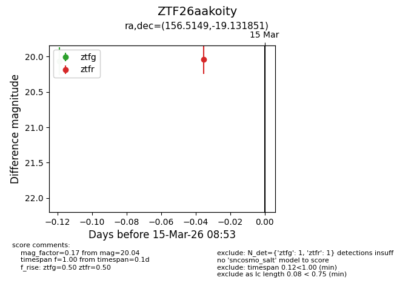
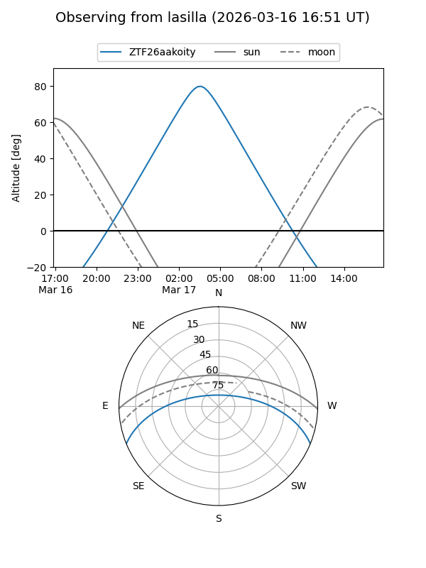
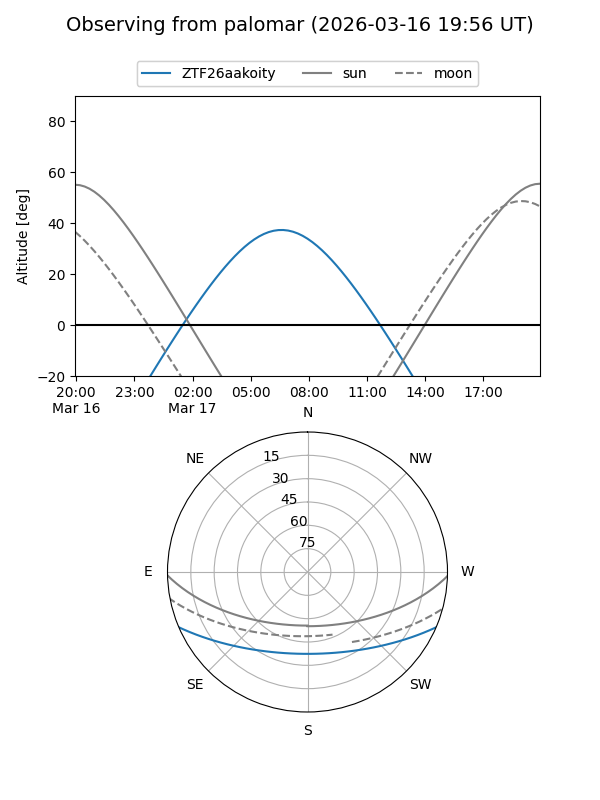

ZTF26aakoity
Target ZTF26aakoity at 2026-03-15 08:55
Aliases and brokers:
FINK: link
Lasair: link
ALeRCE: link
alt names
ZTF26aakoity (ztf,fink_ztf)
Coordinates:
equatorial (ra, dec) = 156.5149,-19.13185
equatorial (HMS+DMS) = 10:26:03.57,-19:07:54.66
galactic (l, b) = (261.6922,+31.85804)
Flags:
Photometry:
last ztfg=20.07, ztfr=20.04
1 ztfg, 1 ztfr detections
Lightcurve

Visibility


Additional plots